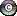

SciMiner Mined Target Summary Page
Here are the targets (genes/proteins) that SciMiner has mined.
| Rank | HUGO | Symbol | Target Name | #Occur | #Paper | Matched_Terms | MiMI |
|---|---|---|---|---|---|---|---|
| 1 | 11179 | SOD1 | superoxide dismutase 1, soluble (amyotrophic lateral sclerosis 1 (adult)) | 1372 | 62 | SOD-1 | ALS1 | SOD1 | SOD1s | SOD1- | SOD1-containing | SOD-mimetic | SOD-expressing | SOD1-Mediated | SOD1-mediated | hSOD1 | hSOD | SOD-inhibitable | ALS | mSOD1 | SOD1-expressing | superoxide dismutase | superoxide dismutase 1 | superoxide dismutase1 |  |
| 2 | 11892 | TNF | tumor necrosis factor (TNF superfamily, member 2) | 475 | 43 | TNF-expression | TNF-produced | TNF-alpha-dependent | TNF-_amp_#945 | TNF-dependant | TNF-deficient | TNFalpha | TNF-A | TNF-Related | tumor necrosis factor | tnf alpha | tumor necrosis factor alpha | |
| 3 | 7873 | NOS2A | nitric oxide synthase 2A (inducible, hepatocytes) | 172 | 34 | NOS | iNOS-dependent | iNOS-derived | nitric oxide synthase | |
| 4 | 620 | APP | amyloid beta (A4) precursor protein (peptidase nexin-II, Alzheimer disease) | 156 | 29 | APP | amyloid | hAPP | Abeta | amyloid beta protein | |
| 5 | 9605 | PTGS2 | prostaglandin-endoperoxide synthase 2 (prostaglandin G/H synthase and cyclooxygenase) | 1448 | 26 | COX-2 | COX-2- | COX-immunoreactivity | COX-2-negative | COX-dependent | COX-2-mediated | COX-2-generated | COX-derived | COX-isozyme-deficient | hCOX-2 | COX-2-inhibitor | COX-activity | COX-2-synthesized | COX-independent | COX-2-induced | COX-mediated | Cox-2 | COX-2-deficient | COX-2-specific | COX2 | COX-2-derived | COX-2-positive | cox 2 | hcox 2 | cox2 | |
| 6 | 6018 | IL6 | interleukin 6 (interferon, beta 2) | 287 | 25 | IL-6 | IL6 | HGF | il 6 | interleukin 6 | |
| 7 | 4235 | GFAP | glial fibrillary acidic protein | 95 | 22 | GFAP- | GFAP-positive | GFAP-immunoreactive | glial fibrillary acidic protein | |
| 8 | 5992 | IL1B | interleukin 1, beta | 153 | 18 | IL-1 | IL-1B | IL-1beta | IL1beta | il 1 | interleukin 1 beta | il 1b | |
| 9 | 5438 | IFNG | interferon, gamma | 55 | 16 | IFN-G | IFN-gamma | interferon gamma | |
| 10 | 1504 | CASP3 | caspase 3, apoptosis-related cysteine peptidase | 52 | 14 | caspase 3 | |
| 11 | 990 | BCL2 | B-cell CLL/lymphoma 2 | 74 | 12 | Bcl-2 | Bcl2 | bcl 2 | bcl2 | |
| 12 | 7808 | NGF | nerve growth factor (beta polypeptide) | 55 | 12 | NGF-mimetic | nerve growth factor | |
| 13 | 6081 | INS | insulin | 27 | 12 | insulin | |
| 14 | 7794 | NFKB1 | nuclear factor of kappa light polypeptide gene enhancer in B-cells 1 (p105) | 34 | 11 | NF-kappaB-mediated | NF-kB | NFKB | NFkB | nf kappa b | nuclear factor kappa b | |
| 15 | 613 | APOE | apolipoprotein E | 32 | 11 | APOE | apoE | ApoE-containing | apolipoprotein e | |
| 16 | 10417 | RPS27A | ribosomal protein S27a | 22 | 11 | ubiquitin | |
| 17 | 9236 | PPARG | peroxisome proliferator-activated receptor gamma | 304 | 10 | PPARgamma-independent | PPARgamma-immunoreactive | PPAR-G | PPARG | peroxisome proliferator activated receptor gamma | ppar gamma | |
| 18 | 6014 | IL4 | interleukin 4 | 236 | 10 | IL4 | Il-4 | IL-4 | IL-4-mediated | IL-4-induced | interleukin 4 | il 4 | |
| 19 | 7872 | NOS1 | nitric oxide synthase 1 (neuronal) | 65 | 10 | NOS | nNOS | NOSs | NOS-catalyzed | NOS-transfected | neuronal nitric oxide synthase | |
| 20 | 6149 | ITGAM | integrin, alpha M (complement component 3 receptor 3 subunit) | 31 | 10 | CD11b | CD11B | MAC-1 | mac 1 | |
| 21 | 4931 | HLA-A | major histocompatibility complex, class I, A | 17 | 10 | MHC-restricted | |
| 22 | 10940 | SLC1A2 | solute carrier family 1 (glial high affinity glutamate transporter), member 2 | 68 | 9 | GLT-1 | EAAT-2 | EAAT2 | GLT1 | excitatory amino acid transporter 2 | glt 1 | glt1 | |
| 23 | 5962 | IL10 | interleukin 10 | 40 | 9 | IL-10 | il 10 | interleukin 10 | |
| 24 | 6871 | MAPK1 | mitogen-activated protein kinase 1 | 38 | 9 | ERK | p38-mediated | ERKs | MAPK-mediated | MAP | |
| 25 | 1033 | BDNF | brain-derived neurotrophic factor | 29 | 9 | BDNF | BDNF-associated | brain derived neurotrophic factor | neurotrophin | |
| 26 | 727 | ARTN | artemin | 11 | 9 | neurotrophic factor | |
| 27 | 12680 | VEGFA | vascular endothelial growth factor A | 328 | 8 | VEGF-dependent | VEGF-A-like | VPF | VEGF-driven | VEGF-A-dependent | VEGF-induced | VEGF-mediated | VEGFs | VEGF-A-induced | vascular endothelial growth factor | vegf a | vascular permeability factor | vascular endothelial growth factor a | |
| 28 | 5464 | IGF1 | insulin-like growth factor 1 (somatomedin C) | 198 | 8 | IGF-1 | IGF1-treated | Igf-1 | IGF1-mediated | insulin like growth factor 1 | |
| 29 | 9232 | PPARA | peroxisome proliferator-activated receptor alpha | 170 | 8 | PPAR | PPAR-ligands | PPAR-A | PPARs | PPAR-independent | |
| 30 | 10618 | CCL2 | chemokine (C-C motif) ligand 2 | 101 | 8 | CCL2 | MCP1 | MCP-1 | mcp 1 | monocyte chemoattractant protein 1 | mcp1 | |
| 31 | 1499 | CASP1 | caspase 1, apoptosis-related cysteine peptidase (interleukin 1, beta, convertase) | 44 | 8 | ICE | caspase 1 | |
| 32 | 391 | AKT1 | v-akt murine thymoma viral oncogene homolog 1 | 32 | 8 | Rac | Akt | AKT | protein kinase b | |
| 33 | 3796 | FOS | v-fos FBJ murine osteosarcoma viral oncogene homolog | 25 | 8 | AP-1 | Fos | ap 1 | activator protein 1 | c fos | |
| 34 | 11919 | CD40 | CD40 molecule, TNF receptor superfamily member 5 | 14 | 8 | CD-40 | CD40 | tumor necrosis factor receptor superfamily | |
| 35 | 6001 | IL2 | interleukin 2 | 13 | 8 | mIL2 | IL-2 | IL2 | il 2 | interleukin 2 | |
| 36 | 11782 | TH | tyrosine hydroxylase | 13 | 8 | tyrosine hydroxylase | tyrosine 3 monooxygenase | |
| 37 | 5991 | IL1A | interleukin 1, alpha | 11 | 8 | IL1alpha | IL1 | interleukin 1 | |
| 38 | 1678 | CD4 | CD4 molecule | 9 | 8 | CD4 | |
| 39 | 9604 | PTGS1 | prostaglandin-endoperoxide synthase 1 (prostaglandin G/H synthase and cyclooxygenase) | 160 | 7 | COX-1 | COX-1-positive | PCOX-1 | COX-3 | |
| 40 | 11920 | FAS | Fas (TNF receptor superfamily, member 6) | 29 | 7 | CD95 | Fas-ligand | Fas-associated | Fas-triggered | |
| 41 | 2169 | CNTF | ciliary neurotrophic factor | 22 | 7 | CNTF | CNTF-deficient | ciliary neurotrophic factor | |
| 42 | 4571 | GRIA1 | glutamate receptor, ionotropic, AMPA 1 | 19 | 7 | glutamate receptor | |
| 43 | 6925 | MBP | myelin basic protein | 11 | 7 | MBP | myelin basic protein | |
| 44 | 399 | ALB | albumin | 10 | 7 | albumin | serum albumin | |
| 45 | 14874 | NOX5 | NADPH oxidase, EF-hand calcium binding domain 5 | 76 | 6 | Nox5 | nadph oxidase | |
| 46 | 1693 | CD68 | CD68 molecule | 50 | 6 | CD68 | CD-68 | |
| 47 | 11917 | TNFRSF1B | tumor necrosis factor receptor superfamily, member 1B | 44 | 6 | p75-dependent | TNFR2 | TNF-R2 | NTR | |
| 48 | 11848 | TLR2 | toll-like receptor 2 | 35 | 6 | TLR-2 | TLR2 | toll like receptor 2 | |
| 49 | 4141 | GAPDH | glyceraldehyde-3-phosphate dehydrogenase | 24 | 6 | GAPDH | glyceraldehyde 3 phosphate dehydrogenase | |
| 50 | 1509 | CASP8 | caspase 8, apoptosis-related cysteine peptidase | 19 | 6 | caspase-8 | caspase 8 | cysteine protease | |
| 51 | 4232 | GDNF | glial cell derived neurotrophic factor | 14 | 6 | GDNF | glial cell line derived neurotrophic factor | glial derived neurotrophic factor | |
| 52 | 19986 | CYCS | cytochrome c, somatic | 9 | 6 | CYCS | cytochrome c | |
| 53 | 6876 | MAPK14 | mitogen-activated protein kinase 14 | 9 | 6 | p38 | p38 mitogen activated protein kinase | p38 map kinase | |
| 54 | 5232 | HSPA1A | heat shock 70kDa protein 1A | 69 | 5 | HSPs | Hsp | HSP | HSP70 | Hsp70 | hsp72 | Hsp72 | hsp70 | |
| 55 | 11936 | FASLG | Fas ligand (TNF superfamily, member 6) | 63 | 5 | FasL-immunoreactive | fas ligand | |
| 56 | 9508 | PSEN1 | presenilin 1 (Alzheimer disease 3) | 34 | 5 | PSEN1 | PS1 | PS-1 | presenilin 1 | |
| 57 | 19383 | SOCS1 | suppressor of cytokine signaling 1 | 26 | 5 | SOCS-1 | suppressor of cytokine signaling 1 | socs 1 | |
| 58 | 7876 | NOS3 | nitric oxide synthase 3 (endothelial cell) | 21 | 5 | NOS3 | eNOS | endothelial nitric oxide synthase | |
| 59 | 8975 | PIK3CA | phosphoinositide-3-kinase, catalytic, alpha polypeptide | 20 | 5 | PI3-kinase | PI3K | PI3K-dependent | phosphatidylinositol 3 kinase | pi3 kinase | |
| 60 | 10632 | CCL5 | chemokine (C-C motif) ligand 5 | 15 | 5 | CCL5 | RANTES | |
| 61 | 5993 | IL1R1 | interleukin 1 receptor, type I | 10 | 5 | IL-1R | IL-1RA | IL1RA | Il-1ra | |
| 62 | 11362 | STAT1 | signal transducer and activator of transcription 1, 91kDa | 10 | 5 | STATs | STAT1 | STAT-1 | |
| 63 | 9461 | PRPH | peripherin | 7 | 5 | peripherin | |
| 64 | 1516 | CAT | catalase | 6 | 5 | CAT | catalase | |
| 65 | 9594 | PTGER2 | prostaglandin E receptor 2 (subtype EP2), 53kDa | 45 | 4 | EP2-like | EP2-deficient | |
| 66 | 132 | ACTB | actin, beta | 21 | 4 | beta-actin | beta actin | |
| 67 | 6893 | MAPT | microtubule-associated protein tau | 20 | 4 | tau | microtubule associated protein tau | tau protein | |
| 68 | 11180 | SOD2 | superoxide dismutase 2, mitochondrial | 17 | 4 | Mn-SOD | MnSOD | SOD2 | manganese superoxide dismutase | mn sod | |
| 69 | 11916 | TNFRSF1A | tumor necrosis factor receptor superfamily, member 1A | 12 | 4 | TNFR1 | TNF-receptor | TNF-R1 | p55 | |
| 70 | 7176 | MMP9 | matrix metallopeptidase 9 (gelatinase B, 92kDa gelatinase, 92kDa type IV collagenase) | 9 | 4 | MMP-9 | MMP9 | matrix metalloproteinase 9 | mmp 9 | mmp9 | |
| 71 | 6025 | IL8 | interleukin 8 | 8 | 4 | CXCL8 | IL-8 | il 8 | |
| 72 | 6011 | IL3 | interleukin 3 (colony-stimulating factor, multiple) | 6 | 4 | IL3 | IL-3 | interleukin 3 | il 3 | |
| 73 | 11765 | TGFA | transforming growth factor, alpha | 5 | 4 | transforming growth factor | |
| 74 | 2578 | CYBB | cytochrome b-245, beta polypeptide (chronic granulomatous disease) | 172 | 3 | Nox2 | NOX2 | gp91phox | gp91 phox | |
| 75 | 19391 | SOCS3 | suppressor of cytokine signaling 3 | 24 | 3 | SOCS-3 | socs 3 | |
| 76 | 7739 | NEFL | neurofilament, light polypeptide 68kDa | 18 | 3 | NF-L | nf l | neurofilament light | |
| 77 | 9235 | PPARD | peroxisome proliferator-activated receptor delta | 13 | 3 | FAAR | NUC-1 | PPAR-B | |
| 78 | 4851 | HTT | huntingtin | 12 | 3 | huntingtin | |
| 79 | 6204 | JUN | jun oncogene | 10 | 3 | AP-1 | c-jun | c-Jun | c jun | |
| 80 | 9449 | PRNP | prion protein (p27-30) (Creutzfeldt-Jakob disease, Gerstmann-Strausler-Scheinker syndrome, fatal familial insomnia) | 9 | 3 | PrP | prion protein prp | |
| 81 | 1984 | CISH | cytokine inducible SH2-containing protein | 8 | 3 | SOCS | suppressor of cytokine signaling | |
| 82 | 6547 | LDLR | low density lipoprotein receptor (familial hypercholesterolemia) | 6 | 3 | LDL-r | LDLR | low density lipoprotein receptor | |
| 83 | 7897 | NPC1 | Niemann-Pick disease, type C1 | 6 | 3 | NPC1 | NP-C | niemann pick disease | |
| 84 | 9393 | PRKCA | protein kinase C, alpha | 6 | 3 | protein kinase c | |
| 85 | 992 | BCL2L1 | BCL2-like 1 | 5 | 3 | bcl xl | |
| 86 | 1774 | CDK5 | cyclin-dependent kinase 5 | 5 | 3 | CDK5 | Cdk5 | cyclin dependent kinase 5 | |
| 87 | 6207 | JUP | junction plakoglobin | 5 | 3 | catenin | |
| 88 | 11998 | TP53 | tumor protein p53 | 5 | 3 | p53 | |
| 89 | 6881 | MAPK8 | mitogen-activated protein kinase 8 | 4 | 3 | JNK | Jnk | |
| 90 | 8053 | NUDT6 | nudix (nucleoside diphosphate linked moiety X)-type motif 6 | 4 | 3 | bFGF | |
| 91 | 437 | ALPI | alkaline phosphatase, intestinal | 3 | 3 | alkaline phosphatase | |
| 92 | 936 | BAD | BCL2-antagonist of cell death | 3 | 3 | BAD | |
| 93 | 2345 | CREB1 | cAMP responsive element binding protein 1 | 3 | 3 | CREB | CREB-binding | |
| 94 | 2348 | CREBBP | CREB binding protein (Rubinstein-Taybi syndrome) | 3 | 3 | CBP | creb binding protein | |
| 95 | 2367 | CRP | C-reactive protein, pentraxin-related | 3 | 3 | c reactive protein | |
| 96 | 7661 | NCF2 | neutrophil cytosolic factor 2 (65kDa, chronic granulomatous disease, autosomal 2) | 3 | 3 | p67 phox | chronic granulomatous disease | |
| 97 | 10477 | RXRA | retinoid X receptor, alpha | 3 | 3 | retinoid x receptor | |
| 98 | 11850 | TLR4 | toll-like receptor 4 | 3 | 3 | TLR4 | |
| 99 | 5013 | HMOX1 | heme oxygenase (decycling) 1 | 105 | 2 | HO-1 | ho 1 | heme oxygenase 1 | |
| 100 | 435 | ALOX5 | arachidonate 5-lipoxygenase | 81 | 2 | 5-LOX-mediated | arachidonic acid 5 lipoxygenase | 5 lox | |
| 101 | 6664 | LOX | lysyl oxidase | 73 | 2 | LOX | LOX- | LOX-generated | lysyl oxidase | |
| 102 | 12435 | TXN | thioredoxin | 59 | 2 | TRX | Trx1 | Trx | Trx-1 | thioredoxin | |
| 103 | 8893 | PGF | placental growth factor | 50 | 2 | PGF | PlGF-2 | placenta growth factor | plgf 2 | |
| 104 | 7197 | MOG | myelin oligodendrocyte glycoprotein | 45 | 2 | MOG-immunized | MOG-induced | MOG-treated | myelin oligodendrocyte glycoprotein | |
| 105 | 7889 | NOX1 | NADPH oxidase 1 | 39 | 2 | NOX1 | Nox1-deficient | nadph oxidase 1 | |
| 106 | 9595 | PTGER3 | prostaglandin E receptor 3 (subtype EP3) | 28 | 2 | EP3-deficient | |
| 107 | 9201 | POMC | proopiomelanocortin (adrenocorticotropin/ beta-lipotropin/ alpha-melanocyte stimulating hormone/ beta-melanocyte stimulating hormone/ beta-endorphin) | 23 | 2 | ACTH | MSH | |
| 108 | 6000 | IL1RN | interleukin 1 receptor antagonist | 22 | 2 | IL-1ra | interleukin 1 receptor antagonist | icil 1ra | |
| 109 | 9593 | PTGER1 | prostaglandin E receptor 1 (subtype EP1), 42kDa | 22 | 2 | EP1 | |
| 110 | 2615 | CYP2B6 | cytochrome P450, family 2, subfamily B, polypeptide 6 | 21 | 2 | P450 | |
| 111 | 2432 | CSF1 | colony stimulating factor 1 (macrophage) | 20 | 2 | CSF-1 | M-CSF | Csf1 | macrophage colony stimulating factor | m csf | colony stimulating factor 1 | |
| 112 | 3553 | FAAH | fatty acid amide hydrolase | 19 | 2 | FAAH | fatty acid amide hydrolase | |
| 113 | 4910 | HIF1A | hypoxia-inducible factor 1, alpha subunit (basic helix-loop-helix transcription factor) | 19 | 2 | HIF-1 | hypoxia inducible factor 1 | |
| 114 | 11609 | TBXAS1 | thromboxane A synthase 1 (platelet, cytochrome P450, family 5, subfamily A) | 17 | 2 | cytochrome p450 | |
| 115 | 9600 | PTGFR | prostaglandin F receptor (FP) | 11 | 2 | prostaglandin receptor | |
| 116 | 9509 | PSEN2 | presenilin 2 (Alzheimer disease 4) | 10 | 2 | PSEN2 | PS-2 | PS2 | presenilin 2 | |
| 117 | 18420 | SETD2 | SET domain containing 2 | 10 | 2 | hif 1 | |
| 118 | 2434 | CSF2 | colony stimulating factor 2 (granulocyte-macrophage) | 8 | 2 | GM-CSF | granulocyte macrophage colony stimulating factor | gm csf | |
| 119 | 10647 | CX3CL1 | chemokine (C-X3-C motif) ligand 1 | 8 | 2 | fractalkine | |
| 120 | 5995 | IL1RAP | interleukin 1 receptor accessory protein | 8 | 2 | IL-1RAcP | il 1racp | |
| 121 | 7737 | NEFH | neurofilament, heavy polypeptide 200kDa | 8 | 2 | NF-H | |
| 122 | 9065 | PLCG1 | phospholipase C, gamma 1 | 8 | 2 | PLC | |
| 123 | 9596 | PTGER4 | prostaglandin E receptor 4 (subtype EP4) | 8 | 2 | EP4 | |
| 124 | 2159 | CNR1 | cannabinoid receptor 1 (brain) | 7 | 2 | CB1 | cannabinoid receptor 1 | |
| 125 | 3415 | EPO | erythropoietin | 7 | 2 | EPO | erythropoietin | |
| 126 | 4572 | GRIA2 | glutamate receptor, ionotropic, AMPA 2 | 7 | 2 | GluR2 | |
| 127 | 11766 | TGFB1 | transforming growth factor, beta 1 | 7 | 2 | TGF-beta1 | TGF-B | transforming growth factor beta | |
| 128 | 1705 | CD86 | CD86 molecule | 6 | 2 | CD86 | |
| 129 | 2294 | COX8A | cytochrome c oxidase subunit 8A (ubiquitous) | 6 | 2 | COX-2-derived | COXs | COX-1-deficient | |
| 130 | 2711 | DCTN1 | dynactin 1 (p150, glued homolog, Drosophila) | 6 | 2 | DCTN1 | p150 glued | dynactin 1 | |
| 131 | 5973 | IL13 | interleukin 13 | 6 | 2 | IL-13 | il 13 | |
| 132 | 11241 | SPI1 | spleen focus forming virus (SFFV) proviral integration oncogene spi1 | 6 | 2 | PU.1 | |
| 133 | 11742 | TFAP2A | transcription factor AP-2 alpha (activating enhancer binding protein 2 alpha) | 6 | 2 | Ap-2 | AP-2 | ap 2 | |
| 134 | 933 | BACE1 | beta-site APP-cleaving enzyme 1 | 5 | 2 | BACE1 | |
| 135 | 8024 | NTF4 | neurotrophin 4 | 5 | 2 | NT-4 | NT-4/5 | neurotrophin 4 | nt 4/5 | |
| 136 | 8031 | NTRK1 | neurotrophic tyrosine kinase, receptor, type 1 | 5 | 2 | trkA | TrkA | Trk | |
| 137 | 108 | ACHE | acetylcholinesterase (Yt blood group) | 4 | 2 | acetylcholinesterase | |
| 138 | 8768 | AIFM1 | apoptosis-inducing factor, mitochondrion-associated, 1 | 4 | 2 | AIF | apoptosis inducing factor | |
| 139 | 26515 | COQ10A | coenzyme Q10 homolog A (S. cerevisiae) | 4 | 2 | Q10 | |
| 140 | 2770 | DES | desmin | 4 | 2 | desmin | intermediate filament protein | |
| 141 | 3240 | EGR3 | early growth response 3 | 4 | 2 | EGR3 | early growth response 3 | |
| 142 | 3573 | FADD | Fas (TNFRSF6)-associated via death domain | 4 | 2 | FADD | |
| 143 | 6192 | JAK2 | Janus kinase 2 (a protein tyrosine kinase) | 4 | 2 | JAK2 | |
| 144 | 21285 | ADCY10 | adenylate cyclase 10 (soluble) | 3 | 2 | adenylate cyclase | |
| 145 | 443 | ALS2 | amyotrophic lateral sclerosis 2 (juvenile) | 3 | 2 | ALS2 | |
| 146 | 1700 | CD80 | CD80 molecule | 3 | 2 | CD80 | |
| 147 | 10637 | CXCL10 | chemokine (C-X-C motif) ligand 10 | 3 | 2 | CXCL10 | IP-10 | ip 10 | |
| 148 | 2625 | CYP2D6 | cytochrome P450, family 2, subfamily D, polypeptide 6 | 3 | 2 | CYP2D6 | |
| 149 | 21528 | DIABLO | diablo homolog (Drosophila) | 3 | 2 | Smac | |
| 150 | 15531 | EBNA1BP2 | EBNA1 binding protein 2 | 3 | 2 | p40 | |
| 151 | 3665 | FGF1 | fibroblast growth factor 1 (acidic) | 3 | 2 | FGF-1 | aFGF | fibroblast growth factor 1 | |
| 152 | 4341 | GLUL | glutamate-ammonia ligase (glutamine synthetase) | 3 | 2 | glutamine synthetase | |
| 153 | 14065 | HDAC9 | histone deacetylase 9 | 3 | 2 | HDAC | HDACs | |
| 154 | 4893 | HGF | hepatocyte growth factor (hepapoietin A; scatter factor) | 3 | 2 | HGF | hepatocyte growth factor | |
| 155 | 5253 | HSP90AA1 | heat shock protein 90kDa alpha (cytosolic), class A member 1 | 3 | 2 | Hsp90 | |
| 156 | 6190 | JAK1 | Janus kinase 1 (a protein tyrosine kinase) | 3 | 2 | JAK1 | janus kinase 1 | |
| 157 | 6709 | LTA | lymphotoxin alpha (TNF superfamily, member 1) | 3 | 2 | TNF-B | tumor necrosis factor beta | |
| 158 | 4223 | MSTN | myostatin | 3 | 2 | myostatin | growth differentiation factor 8 | |
| 159 | 23212 | MYH14 | myosin, heavy chain 14 | 3 | 2 | myosin | |
| 160 | 7577 | MYH7 | myosin, heavy chain 7, cardiac muscle, beta | 3 | 2 | myosin heavy chain | |
| 161 | 7672 | NCOR1 | nuclear receptor co-repressor 1 | 3 | 2 | N-CoR | n cor | |
| 162 | 7685 | NDUFA2 | NADH dehydrogenase (ubiquinone) 1 alpha subcomplex, 2, 8kDa | 3 | 2 | CD14 | |
| 163 | 15917 | PLCB1 | phospholipase C, beta 1 (phosphoinositide-specific) | 3 | 2 | phospholipase c | |
| 164 | 11925 | TNFSF10 | tumor necrosis factor (ligand) superfamily, member 10 | 3 | 2 | TRAIL-induced | |
| 165 | 12030 | TRADD | TNFRSF1A-associated via death domain | 3 | 2 | TRADD | |
| 166 | 18809 | TUBA1B | tubulin, alpha 1b | 3 | 2 | alpha tubulin | |
| 167 | 2707 | ACE | angiotensin I converting enzyme (peptidyl-dipeptidase A) 1 | 2 | 2 | DCP1 | angiotensin converting enzyme | |
| 168 | 352 | AIF1 | allograft inflammatory factor 1 | 2 | 2 | Iba1-immunoreactive | iba1 | |
| 169 | 593 | BIRC5 | baculoviral IAP repeat-containing 5 (survivin) | 2 | 2 | survivin | |
| 170 | 25079 | CCDC34 | coiled-coil domain containing 34 | 2 | 2 | L-15 | |
| 171 | 10627 | CCL3 | chemokine (C-C motif) ligand 3 | 2 | 2 | CCL3 | MIP-1A | |
| 172 | 1706 | CD8A | CD8a molecule | 2 | 2 | CD8 | |
| 173 | 1876 | CFLAR | CASP8 and FADD-like apoptosis regulator | 2 | 2 | FLIP | |
| 174 | 2355 | CRH | corticotropin releasing hormone | 2 | 2 | CRF | CRH | |
| 175 | 2577 | CYBA | cytochrome b-245, alpha polypeptide | 2 | 2 | p22 phox | |
| 176 | 2681 | DAXX | death-associated protein 6 | 2 | 2 | Daxx | |
| 177 | 3373 | EP300 | E1A binding protein p300 | 2 | 2 | p300 | |
| 178 | 3493 | ETV4 | ets variant gene 4 (E1A enhancer binding protein, E1AF) | 2 | 2 | PEA-3 | |
| 179 | 24692 | FCAMR | Fc receptor, IgA, IgM, high affinity | 2 | 2 | fc receptor | |
| 180 | 3676 | FGF2 | fibroblast growth factor 2 (basic) | 2 | 2 | basic fibroblast growth factor bfgf | |
| 181 | 5344 | ICAM1 | intercellular adhesion molecule 1 (CD54), human rhinovirus receptor | 2 | 2 | CD54 | ICAM-1 | |
| 182 | 5997 | IL1RAPL2 | interleukin 1 receptor accessory protein-like 2 | 2 | 2 | il 1 receptor | |
| 183 | 21210 | LPAL2 | lipoprotein, Lp(a)-like 2 | 2 | 2 | apolipoprotein | |
| 184 | 6886 | MAPK9 | mitogen-activated protein kinase 9 | 2 | 2 | SAPK | |
| 185 | 7762 | NEUROD1 | neurogenic differentiation 1 | 2 | 2 | beta2 | |
| 186 | 14537 | NPC2 | Niemann-Pick disease, type C2 | 2 | 2 | NPC2 | |
| 187 | 8023 | NTF3 | neurotrophin 3 | 2 | 2 | NT-3 | neurotrophin 3 | |
| 188 | 8607 | PARK2 | Parkinson disease (autosomal recessive, juvenile) 2, parkin | 2 | 2 | e3 ubiquitin ligase | |
| 189 | 9801 | RAC1 | ras-related C3 botulinum toxin substrate 1 (rho family, small GTP binding protein Rac1) | 2 | 2 | rac1 | Rac1 | |
| 190 | 21148 | RNF123 | ring finger protein 123 | 2 | 2 | ubiquitin ligase | |
| 191 | 10941 | SLC1A3 | solute carrier family 1 (glial high affinity glutamate transporter), member 3 | 2 | 2 | EAAT-1 | EAAT1 | |
| 192 | 11205 | SP1 | Sp1 transcription factor | 2 | 2 | SP1 | SP-1 | |
| 193 | 11905 | TNFRSF10B | tumor necrosis factor receptor superfamily, member 10b | 2 | 2 | death receptor 5 | |
| 194 | 7218 | MPO | myeloperoxidase | 123 | 1 | MPO-positive | MPO-derived | MPO-deficient | MPO-damaged | MPO-specific | myeloperoxidase | |
| 195 | 9237 | PPARGC1A | peroxisome proliferator-activated receptor gamma, coactivator 1 alpha | 86 | 1 | PGC-1 | pgc 1 | |
| 196 | 6307 | KDR | kinase insert domain receptor (a type III receptor tyrosine kinase) | 73 | 1 | VEGFR-1-blocking | KDR | VEGFR-2 | Flk-1 | VEGFR-associated | VEGFRs | |
| 197 | 429 | ALOX12 | arachidonate 12-lipoxygenase | 71 | 1 | 12-LOX | 12 lox | 12 lipoxygenase | arachidonate 12 lipoxygenase | |
| 198 | 3401 | EPHX1 | epoxide hydrolase 1, microsomal (xenobiotic) | 55 | 1 | EPOX-derived | EPOX-mediated | EPOX-generated | EPOX-catalyzed | |
| 199 | 3763 | FLT1 | fms-related tyrosine kinase 1 (vascular endothelial growth factor/vascular permeability factor receptor) | 37 | 1 | Flt-1 | VEGFR-1 | |
| 200 | 7422 | MT-CO3 | mitochondrially encoded cytochrome c oxidase III | 30 | 1 | COX-3 | COX3 | |
| 201 | 3708 | FIGF | c-fos induced growth factor (vascular endothelial growth factor D) | 23 | 1 | VEGF-D | vegf d | |
| 202 | 8004 | NRP1 | neuropilin 1 | 23 | 1 | NRP | NRPs | NRP-1 | neuropilin 1 | |
| 203 | 29823 | MYL6B | myosin, light chain 6B, alkali, smooth muscle and non-muscle | 19 | 1 | MLC | |
| 204 | 12681 | VEGFB | vascular endothelial growth factor B | 19 | 1 | VEGF-B | |
| 205 | 12682 | VEGFC | vascular endothelial growth factor C | 19 | 1 | VEGF-C | |
| 206 | 5014 | HMOX2 | heme oxygenase (decycling) 2 | 18 | 1 | HO-2 | ho 2 | |
| 207 | 12663 | VCAM1 | vascular cell adhesion molecule 1 | 17 | 1 | VCAM-1 | |
| 208 | 3767 | FLT4 | fms-related tyrosine kinase 4 | 16 | 1 | Flt-4 | VEGFR-3 | |
| 209 | 9545 | PSMB8 | proteasome (prosome, macropain) subunit, beta type, 8 (large multifunctional peptidase 7) | 16 | 1 | LMP7 | |
| 210 | 7782 | NFE2L2 | nuclear factor (erythroid-derived 2)-like 2 | 15 | 1 | NF-E2 | Nrf2 | Nrf-2 | nf e2 | |
| 211 | 2482 | CSTB | cystatin B (stefin B) | 14 | 1 | CSTB | EPM1 | STFB | cystatin b | stefin b | |
| 212 | 12716 | TRPV1 | transient receptor potential cation channel, subfamily V, member 1 | 14 | 1 | TRPV1 | |
| 213 | 483 | ANG | angiogenin, ribonuclease, RNase A family, 5 | 12 | 1 | ANG | angiogenin | |
| 214 | 7660 | NCF1 | neutrophil cytosolic factor 1, (chronic granulomatous disease, autosomal 1) | 12 | 1 | p47 | |
| 215 | 270 | PARP1 | poly (ADP-ribose) polymerase family, member 1 | 12 | 1 | PARP | poly adp ribose polymerase | |
| 216 | 241 | ADCYAP1 | adenylate cyclase activating polypeptide 1 (pituitary) | 11 | 1 | PACAP | adenylate cyclase activating polypeptide | |
| 217 | 7408 | MT3 | metallothionein 3 | 10 | 1 | MT-3 | metallothionein 3 | |
| 218 | 21683 | NAPEPLD | N-acyl phosphatidylethanolamine phospholipase D | 10 | 1 | NAPE-PLD | nape pld | |
| 219 | 8005 | NRP2 | neuropilin 2 | 10 | 1 | NRP-2 | neuropilin 2 | |
| 220 | 9204 | PON1 | paraoxonase 1 | 10 | 1 | PON | PON1 | paraoxonase | paraoxonase 1 | |
| 221 | 12649 | VAPB | VAMP (vesicle-associated membrane protein)-associated protein B and C | 10 | 1 | ALS8 | VAPB | |
| 222 | 2527 | CTSB | cathepsin B | 9 | 1 | CATB | cathepsin b | |
| 223 | 17772 | TXN2 | thioredoxin 2 | 9 | 1 | Trx2 | Trx-2 | |
| 224 | 12693 | VIP | vasoactive intestinal peptide | 9 | 1 | VIP | vasoactive intestinal peptide | |
| 225 | 403 | ALDH3A2 | aldehyde dehydrogenase 3 family, member A2 | 8 | 1 | SLS | fatty aldehyde dehydrogenase | |
| 226 | 1062 | BLVRA | biliverdin reductase A | 8 | 1 | BVR | |
| 227 | 6711 | LTB | lymphotoxin beta (TNF superfamily, member 3) | 8 | 1 | LTB | |
| 228 | 9591 | PTGDR | prostaglandin D2 receptor (DP) | 8 | 1 | DP1 | |
| 229 | 13432 | RNF19A | ring finger protein 19A | 8 | 1 | Dorfin | dorfin | |
| 230 | 10658 | SDC1 | syndecan 1 | 8 | 1 | CD138-positive | |
| 231 | 11777 | TGM1 | transglutaminase 1 (K polypeptide epidermal type I, protein-glutamine-gamma-glutamyltransferase) | 8 | 1 | TGase | Tgase | |
| 232 | 2160 | CNR2 | cannabinoid receptor 2 (macrophage) | 7 | 1 | CB2 | cannabinoid receptor 2 | |
| 233 | 6015 | IL4R | interleukin 4 receptor | 7 | 1 | IL-4R | |
| 234 | 6152 | ITGAX | integrin, alpha X (complement component 3 receptor 4 subunit) | 7 | 1 | CD11c | CD11c-positive | integrin alpha x | |
| 235 | 10500 | S100B | S100 calcium binding protein B | 7 | 1 | S100B | |
| 236 | 583 | APC | adenomatous polyposis coli | 6 | 1 | DP2 | |
| 237 | 1613 | CCS | copper chaperone for superoxide dismutase | 6 | 1 | CCS | |
| 238 | 5261 | HSPD1 | heat shock 60kDa protein 1 (chaperonin) | 6 | 1 | Hsp60 | chaperonin | |
| 239 | 6692 | LRP1 | low density lipoprotein-related protein 1 (alpha-2-macroglobulin receptor) | 6 | 1 | LRP | |
| 240 | 7315 | MS4A1 | membrane-spanning 4-domains, subfamily A, member 1 | 6 | 1 | CD20 | |
| 241 | 7734 | NEFM | neurofilament, medium polypeptide 150kDa | 6 | 1 | NF-M | nf m | |
| 242 | 10718 | SELE | selectin E (endothelial adhesion molecule 1) | 6 | 1 | SELE | |
| 243 | 11427 | STUB1 | STIP1 homology and U-box containing protein 1 | 6 | 1 | CHIP | |
| 244 | 20473 | BRIP1 | BRCA1 interacting protein C-terminal helicase 1 | 5 | 1 | Bach1 | |
| 245 | 1323 | C4A | complement component 4A (Rodgers blood group) | 5 | 1 | C4a | C4b | |
| 246 | 2537 | CTSL1 | cathepsin L1 | 5 | 1 | CATL | cathepsin l | |
| 247 | 5246 | HSPB1 | heat shock 27kDa protein 1 | 5 | 1 | Hsp25 | Hsp27 | |
| 248 | 5439 | IFNGR1 | interferon gamma receptor 1 | 5 | 1 | IFNGR | |
| 249 | 8574 | PAFAH1B1 | platelet-activating factor acetylhydrolase, isoform Ib, alpha subunit 45kDa | 5 | 1 | MDS | LIS-1 | |
| 250 | 9376 | PRKAA1 | protein kinase, AMP-activated, alpha 1 catalytic subunit | 5 | 1 | AMPK | amp activated protein kinase | |
| 251 | 16 | SERPINA3 | serpin peptidase inhibitor, clade A (alpha-1 antiproteinase, antitrypsin), member 3 | 5 | 1 | antichymotrypsin | |
| 252 | 329 | AGRN | agrin | 4 | 1 | agrin | Agrin | |
| 253 | 336 | AGTR1 | angiotensin II receptor, type 1 | 4 | 1 | AGTR1 | angiotensin ii receptor | angiotensin ii receptor type1 | |
| 254 | 1325 | C4BPA | complement component 4 binding protein, alpha | 4 | 1 | PrP | |
| 255 | 2536 | CTSK | cathepsin K | 4 | 1 | cathepsin x | |
| 256 | 3353 | ENO2 | enolase 2 (gamma, neuronal) | 4 | 1 | NSE | |
| 257 | 14922 | HRASLS | HRAS-like suppressor | 4 | 1 | H-REV107-like | h rev107 | |
| 258 | 6155 | ITGB2 | integrin, beta 2 (complement component 3 receptor 3 and 4 subunit) | 4 | 1 | CD18 | |
| 259 | 6596 | LIF | leukemia inhibitory factor (cholinergic differentiation factor) | 4 | 1 | LIF | leukemia inhibitory factor | |
| 260 | 6677 | LPL | lipoprotein lipase | 4 | 1 | LPL | lipoprotein lipase | |
| 261 | 6776 | MAF | v-maf musculoaponeurotic fibrosarcoma oncogene homolog (avian) | 4 | 1 | Maf | |
| 262 | 7612 | MYOG | myogenin (myogenic factor 4) | 4 | 1 | myogenin | |
| 263 | 7797 | NFKBIA | nuclear factor of kappa light polypeptide gene enhancer in B-cells inhibitor, alpha | 4 | 1 | ikappabalpha | |
| 264 | 7939 | NPPA | natriuretic peptide precursor A | 4 | 1 | NPPA | atrial natriuretic peptide | |
| 265 | 9205 | PON2 | paraoxonase 2 | 4 | 1 | PON2 | paraoxonase 2 | |
| 266 | 9919 | RBP1 | retinol binding protein 1, cellular | 4 | 1 | CRBP1 | CRBP | retinol binding protein1 | |
| 267 | 14929 | SIRT1 | sirtuin (silent mating type information regulation 2 homolog) 1 (S. cerevisiae) | 4 | 1 | SIRT1 | sirtuin 1 | |
| 268 | 11543 | TAF10 | TAF10 RNA polymerase II, TATA box binding protein (TBP)-associated factor, 30kDa | 4 | 1 | TAFII30 | |
| 269 | 286 | ADRB2 | adrenergic, beta-2-, receptor, surface | 3 | 1 | ADRB2 | beta 2 adrenergic receptor | |
| 270 | 288 | ADRB3 | adrenergic, beta-3-, receptor | 3 | 1 | ADRB3 | beta 3 adrenergic receptor | |
| 271 | 473 | AMT | aminomethyltransferase | 3 | 1 | AMT | |
| 272 | 602 | APOA4 | apolipoprotein A-IV | 3 | 1 | APOA4 | |
| 273 | 1764 | CDH5 | cadherin 5, type 2, VE-cadherin (vascular epithelium) | 3 | 1 | ve cadherin | |
| 274 | 1869 | CETP | cholesteryl ester transfer protein, plasma | 3 | 1 | CETP | cholesteryl ester transfer protein | |
| 275 | 2244 | COQ7 | coenzyme Q7 homolog, ubiquinone (yeast) | 3 | 1 | coenzyme q | |
| 276 | 2524 | CTRL | chymotrypsin-like | 3 | 1 | chymotrypsin like | |
| 277 | 2641 | CYP46A1 | cytochrome P450, family 46, subfamily A, polypeptide 1 | 3 | 1 | CYP46 | cholesterol 24 hydroxylase | |
| 278 | 3023 | DRD2 | dopamine receptor D2 | 3 | 1 | dopamine receptor d2 | |
| 279 | 4400 | GNB3 | guanine nucleotide binding protein (G protein), beta polypeptide 3 | 3 | 1 | GNB3 | g protein beta 3 subunit | |
| 280 | 4601 | GRN | granulin | 3 | 1 | granulin | |
| 281 | 4638 | GSTP1 | glutathione S-transferase pi | 3 | 1 | GSTP1 | glutathione transferase | |
| 282 | 4817 | HARS2 | histidyl-tRNA synthetase 2, mitochondrial (putative) | 3 | 1 | HO-3 | |
| 283 | 5381 | IDE | insulin-degrading enzyme | 3 | 1 | IDE | insulin degrading enzyme | |
| 284 | 6206 | JUND | jun D proto-oncogene | 3 | 1 | AP-1 | JunD | |
| 285 | 6619 | LIPC | lipase, hepatic | 3 | 1 | LIPC | |
| 286 | 7436 | MTHFR | 5,10-methylenetetrahydrofolate reductase (NADPH) | 3 | 1 | MTHFR | methylenetetrahydrofolate reductase | |
| 287 | 7576 | MYH6 | myosin, heavy chain 6, cardiac muscle, alpha (cardiomyopathy, hypertrophic 1) | 3 | 1 | MyHC | |
| 288 | 7996 | NRF1 | nuclear respiratory factor 1 | 3 | 1 | NRF-1 | nuclear respiratory factor 1 | |
| 289 | 14180 | PDIA2 | protein disulfide isomerase family A, member 2 | 3 | 1 | PDI | |
| 290 | 16753 | PRDX6 | peroxiredoxin 6 | 3 | 1 | Prx | |
| 291 | 9704 | PVALB | parvalbumin | 3 | 1 | parvalbumin | |
| 292 | 3040 | RCAN1 | regulator of calcineurin 1 | 3 | 1 | DSCR1 | |
| 293 | 10436 | RPS6KB1 | ribosomal protein S6 kinase, 70kDa, polypeptide 1 | 3 | 1 | S6K | p70 s6k | |
| 294 | 10498 | S100A8 | S100 calcium binding protein A8 | 3 | 1 | MRP8 | |
| 295 | 10876 | SIGLEC7 | sialic acid binding Ig-like lectin 7 | 3 | 1 | p75 | |
| 296 | 11005 | SLC2A1 | solute carrier family 2 (facilitated glucose transporter), member 1 | 3 | 1 | GLUT-1 | |
| 297 | 11049 | SLC6A3 | solute carrier family 6 (neurotransmitter transporter, dopamine), member 3 | 3 | 1 | DAT | dopamine transporter | |
| 298 | 11741 | TFAM | transcription factor A, mitochondrial | 3 | 1 | Tfam | TFAM | mitochondrial transcription factor a | |
| 299 | 11827 | TJP1 | tight junction protein 1 (zona occludens 1) | 3 | 1 | ZO-1 | zo 1 | tight junction protein zo 1 | |
| 300 | 12517 | UCP1 | uncoupling protein 1 (mitochondrial, proton carrier) | 3 | 1 | UCP-1 | uncoupling protein 1 | |
| 301 | 436 | ALOX5AP | arachidonate 5-lipoxygenase-activating protein | 2 | 1 | FLAP | |
| 302 | 610 | APOC3 | apolipoprotein C-III | 2 | 1 | APOC3 | |
| 303 | 644 | AR | androgen receptor (dihydrotestosterone receptor; testicular feminization; spinal and bulbar muscular atrophy; Kennedy disease) | 2 | 1 | SBMA | androgen receptor | |
| 304 | 10560 | ATXN7 | ataxin 7 | 2 | 1 | SCA7 | |
| 305 | 1338 | C5AR1 | complement component 5a receptor 1 | 2 | 1 | C5a | |
| 306 | 1473 | CANX | calnexin | 2 | 1 | calnexin | |
| 307 | 1907 | CH25H | cholesterol 25-hydroxylase | 2 | 1 | cholesterol 25 hydroxylase | |
| 308 | 14079 | CHRNA9 | cholinergic receptor, nicotinic, alpha 9 | 2 | 1 | acetylcholine receptor | |
| 309 | 2095 | CLU | clusterin | 2 | 1 | apoJ | clusterin | |
| 310 | 2170 | CNTFR | ciliary neurotrophic factor receptor | 2 | 1 | cntfr alpha | |
| 311 | 2197 | COL1A1 | collagen, type I, alpha 1 | 2 | 1 | collagen | |
| 312 | 2228 | COMT | catechol-O-methyltransferase | 2 | 1 | catechol o methyltransferase | |
| 313 | 10638 | CXCL11 | chemokine (C-X-C motif) ligand 11 | 2 | 1 | I-TAC | i tac | |
| 314 | 2634 | CYP2J2 | cytochrome P450, family 2, subfamily J, polypeptide 2 | 2 | 1 | arachidonic acid epoxygenase | |
| 315 | 26780 | DAND5 | DAN domain family, member 5 | 2 | 1 | Sp-1 | |
| 316 | 2773 | DFFB | DNA fragmentation factor, 40kDa, beta polypeptide (caspase-activated DNase) | 2 | 1 | caspase activated dnase | |
| 317 | 5270 | DNAJB1 | DnaJ (Hsp40) homolog, subfamily B, member 1 | 2 | 1 | Hsp40 | |
| 318 | 13273 | DUOX2 | dual oxidase 2 | 2 | 1 | DUOX2 | Duox2 | |
| 319 | 18173 | ERAP1 | endoplasmic reticulum aminopeptidase 1 | 2 | 1 | PILSAP | |
| 320 | 3562 | FABP7 | fatty acid binding protein 7, brain | 2 | 1 | B-FABP | b fabp | |
| 321 | 3662 | FGB | fibrinogen beta chain | 2 | 1 | FGB | |
| 322 | 4140 | GAP43 | growth associated protein 43 | 2 | 1 | GAP43 | growth associated protein 43 | |
| 323 | 4170 | GATA1 | GATA binding protein 1 (globin transcription factor 1) | 2 | 1 | GATA-1 | |
| 324 | 4191 | GCG | glucagon | 2 | 1 | GLP-1 | |
| 325 | 4324 | GLP1R | glucagon-like peptide 1 receptor | 2 | 1 | GLP-1R | glucagon like peptide 1 receptor | |
| 326 | 4459 | GPLD1 | glycosylphosphatidylinositol specific phospholipase D1 | 2 | 1 | phospholipase d | |
| 327 | 4566 | GRB2 | growth factor receptor-bound protein 2 | 2 | 1 | Grb2 | growth factor receptor bound protein 2 | |
| 328 | 25806 | GSTCD | glutathione S-transferase, C-terminal domain containing | 2 | 1 | glutathione s transferase | |
| 329 | 24961 | HOPX | HOP homeobox | 2 | 1 | HOP-1-positive | |
| 330 | 5215 | HSD17B7 | hydroxysteroid (17-beta) dehydrogenase 7 | 2 | 1 | PRAP | |
| 331 | 5241 | HSPA8 | heat shock 70kDa protein 8 | 2 | 1 | Hsc70 | |
| 332 | 5247 | HSPB2 | heat shock 27kDa protein 2 | 2 | 1 | Hsp27 | |
| 333 | 5986 | IL18 | interleukin 18 (interferon-gamma-inducing factor) | 2 | 1 | IL-18 | il 18 | |
| 334 | 15488 | IL23A | interleukin 23, alpha subunit p19 | 2 | 1 | IL-23 | il 23 | |
| 335 | 23177 | KEAP1 | kelch-like ECH-associated protein 1 | 2 | 1 | Keap1 | |
| 336 | 5176 | KRR1 | KRR1, small subunit (SSU) processome component, homolog (yeast) | 2 | 1 | rip1 | |
| 337 | 6563 | LGALS3 | lectin, galactoside-binding, soluble, 3 | 2 | 1 | MAC-2 | mac 2 | |
| 338 | 6782 | MAFK | v-maf musculoaponeurotic fibrosarcoma oncogene homolog K (avian) | 2 | 1 | MafK | nuclear factor erythroid 2 | |
| 339 | 6879 | MAPK6 | mitogen-activated protein kinase 6 | 2 | 1 | extracellular signal regulated kinase | |
| 340 | 6896 | MARK1 | MAP/microtubule affinity-regulating kinase 1 | 2 | 1 | MARK | |
| 341 | 7107 | MKI67 | antigen identified by monoclonal antibody Ki-67 | 2 | 1 | Ki-67 | ki 67 | |
| 342 | 7166 | MMP2 | matrix metallopeptidase 2 (gelatinase A, 72kDa gelatinase, 72kDa type IV collagenase) | 2 | 1 | MMP2 | matrix metalloproteinase 2 | |
| 343 | 7173 | MMP3 | matrix metallopeptidase 3 (stromelysin 1, progelatinase) | 2 | 1 | MMP3 | mmp3 | |
| 344 | 7545 | MYB | v-myb myeloblastosis viral oncogene homolog (avian) | 2 | 1 | Myb | |
| 345 | 7634 | NAIP | NLR family, apoptosis inhibitory protein | 2 | 1 | NAIP | neuronal apoptosis inhibitory protein | |
| 346 | 17970 | PAIP2 | poly(A) binding protein interacting protein 2 | 2 | 1 | PAIP2 | |
| 347 | 8816 | PDPK1 | 3-phosphoinositide dependent protein kinase-1 | 2 | 1 | PDK1 | |
| 348 | 30306 | PHB2 | prohibitin 2 | 2 | 1 | p22 | BAP | |
| 349 | 8982 | PIK3R4 | phosphoinositide-3-kinase, regulatory subunit 4 | 2 | 1 | p150 | |
| 350 | 8988 | PIN1 | peptidylprolyl cis/trans isomerase, NIMA-interacting 1 | 2 | 1 | UBL5 | |
| 351 | 9040 | PLA2G7 | phospholipase A2, group VII (platelet-activating factor acetylhydrolase, plasma) | 2 | 1 | platelet activating factor acetylhydrolase | |
| 352 | 9611 | PTK2 | PTK2 protein tyrosine kinase 2 | 2 | 1 | FAK | |
| 353 | 10451 | RRM1 | ribonucleotide reductase M1 | 2 | 1 | ribonucleotide reductase | |
| 354 | 10599 | SCNN1A | sodium channel, nonvoltage-gated 1 alpha | 2 | 1 | SCNN1A | |
| 355 | 11291 | SRF | serum response factor (c-fos serum response element-binding transcription factor) | 2 | 1 | SRF | serum response factor | |
| 356 | 11364 | STAT3 | signal transducer and activator of transcription 3 (acute-phase response factor) | 2 | 1 | STAT3 | stat3 | |
| 357 | 11556 | TAL1 | T-cell acute lymphocytic leukemia 1 | 2 | 1 | TAL-1 | tal 1 | |
| 358 | 11769 | TGFB3 | transforming growth factor, beta 3 | 2 | 1 | TGF-beta3 | tgf beta3 | |
| 359 | 11881 | TMSB4X | thymosin beta 4, X-linked | 2 | 1 | thymosin beta 4 | prothymosin beta 4 | |
| 360 | 12513 | UCHL1 | ubiquitin carboxyl-terminal esterase L1 (ubiquitin thiolesterase) | 2 | 1 | UCH-L1 | uch l1 | |
| 361 | 12695 | VIPR2 | vasoactive intestinal peptide receptor 2 | 2 | 1 | VPAC2 | |
| 362 | 80 | ABP1 | amiloride binding protein 1 (amine oxidase (copper-containing)) | 1 | 1 | ABP | |
| 363 | 89 | ACADM | acyl-Coenzyme A dehydrogenase, C-4 to C-12 straight chain | 1 | 1 | ACADM | |
| 364 | 118 | ACO2 | aconitase 2, mitochondrial | 1 | 1 | aconitase | |
| 365 | 26101 | ACSF2 | acyl-CoA synthetase family member 2 | 1 | 1 | acyl coa synthetase 2 | |
| 366 | 238 | ADCY7 | adenylate cyclase 7 | 1 | 1 | adenylyl cyclase | |
| 367 | 243 | ADD1 | adducin 1 (alpha) | 1 | 1 | ADD1 | |
| 368 | 327 | AGPS | alkylglycerone phosphate synthase | 1 | 1 | ADAPS | |
| 369 | 333 | AGT | angiotensinogen (serpin peptidase inhibitor, clade A, member 8) | 1 | 1 | AGT | |
| 370 | 1189 | AHSA1 | AHA1, activator of heat shock 90kDa protein ATPase homolog 1 (yeast) | 1 | 1 | p38 | |
| 371 | 576 | APAF1 | apoptotic peptidase activating factor 1 | 1 | 1 | Apaf1 | |
| 372 | 17889 | APEX2 | APEX nuclease (apurinic/apyrimidinic endonuclease) 2 | 1 | 1 | APEX | |
| 373 | 603 | APOB | apolipoprotein B (including Ag(x) antigen) | 1 | 1 | APOB | |
| 374 | 18704 | ARD1A | ARD1 homolog A, N-acetyltransferase (S. cerevisiae) | 1 | 1 | n acetyltransferase | |
| 375 | 13209 | ARHGEF5 | Rho guanine nucleotide exchange factor (GEF) 5 | 1 | 1 | TIM | |
| 376 | 746 | ASL | argininosuccinate lyase | 1 | 1 | argininosuccinate lyase | |
| 377 | 758 | ASS1 | argininosuccinate synthetase 1 | 1 | 1 | argininosuccinate synthetase | |
| 378 | 800 | ATP1A2 | ATPase, Na+/K+ transporting, alpha 2 (+) polypeptide | 1 | 1 | sodium potassium atpase | |
| 379 | 841 | ATP5G1 | ATP synthase, H+ transporting, mitochondrial F0 complex, subunit C1 (subunit 9) | 1 | 1 | atp synthase lipid binding protein | |
| 380 | 913 | AZU1 | azurocidin 1 (cationic antimicrobial protein 37) | 1 | 1 | heparin binding protein | |
| 381 | 14078 | BACH2 | BTB and CNC homology 1, basic leucine zipper transcription factor 2 | 1 | 1 | Bach-2 | |
| 382 | 950 | BAP1 | BRCA1 associated protein-1 (ubiquitin carboxy-terminal hydrolase) | 1 | 1 | ubiquitin carboxy terminal hydrolase | |
| 383 | 991 | BCL2A1 | BCL2-related protein A1 | 1 | 1 | Bfl-1 | |
| 384 | 591 | BIRC3 | baculoviral IAP repeat-containing 3 | 1 | 1 | inhibitor of apoptosis protein 1 | |
| 385 | 1059 | BLMH | bleomycin hydrolase | 1 | 1 | bleomycin hydrolase | |
| 386 | 3581 | BPTF | bromodomain PHD finger transcription factor | 1 | 1 | FAC1 | |
| 387 | 1242 | C1QB | complement component 1, q subcomponent, B chain | 1 | 1 | C1qB | |
| 388 | 1317 | C2orf3 | chromosome 2 open reading frame 3 | 1 | 1 | GCF | |
| 389 | 13716 | C4orf6 | chromosome 4 open reading frame 6 | 1 | 1 | expressed in neuroblastoma | |
| 390 | 1361 | C9orf3 | chromosome 9 open reading frame 3 | 1 | 1 | APO | |
| 391 | 1508 | CASP7 | caspase 7, apoptosis-related cysteine peptidase | 1 | 1 | caspase 7 | |
| 392 | 1550 | CBS | cystathionine-beta-synthase | 1 | 1 | CBS | |
| 393 | 10630 | CCL4 | chemokine (C-C motif) ligand 4 | 1 | 1 | CCL4 | |
| 394 | 1578 | CCNA2 | cyclin A2 | 1 | 1 | CCNA | |
| 395 | 1582 | CCND1 | cyclin D1 | 1 | 1 | cyclin d1 | |
| 396 | 21420 | CCRK | cell cycle related kinase | 1 | 1 | p42 | |
| 397 | 11935 | CD40LG | CD40 ligand (TNF superfamily, member 5, hyper-IgM syndrome) | 1 | 1 | cd40 ligand | |
| 398 | 6953 | CD46 | CD46 molecule, complement regulatory protein | 1 | 1 | MCP-1_amp_#x3b1 | |
| 399 | 1692 | CD63 | CD63 molecule | 1 | 1 | CD63 | |
| 400 | 1736 | CDC42 | cell division cycle 42 (GTP binding protein, 25kDa) | 1 | 1 | Cdc42 | |
| 401 | 1756 | CDH17 | cadherin 17, LI cadherin (liver-intestine) | 1 | 1 | cadherin | |
| 402 | 1929 | CHGA | chromogranin A (parathyroid secretory protein 1) | 1 | 1 | chromogranin a | |
| 403 | 1940 | CHM | choroideremia (Rab escort protein 1) | 1 | 1 | rep1 | |
| 404 | 30880 | CISD1 | CDGSH iron sulfur domain 1 | 1 | 1 | mitoneet | |
| 405 | 13164 | CNBP | CCHC-type zinc finger, nucleic acid binding protein | 1 | 1 | sterol regulatory element binding protein | |
| 406 | 2187 | COL11A2 | collagen, type XI, alpha 2 | 1 | 1 | PARP | |
| 407 | 2277 | COX6A1 | cytochrome c oxidase subunit VIa polypeptide 1 | 1 | 1 | COX6A1 | |
| 408 | 31395 | COX8B | cytochrome c oxidase, subunit 8B pseudogene | 1 | 1 | cytochrome c oxidase | |
| 409 | 2295 | CP | ceruloplasmin (ferroxidase) | 1 | 1 | cp 2 | |
| 410 | 2435 | CSF2RA | colony stimulating factor 2 receptor, alpha, low-affinity (granulocyte-macrophage) | 1 | 1 | CD116 | |
| 411 | 2529 | CTSD | cathepsin D | 1 | 1 | cathepsin d | |
| 412 | 2530 | CTSE | cathepsin E | 1 | 1 | CATE | |
| 413 | 2545 | CTSS | cathepsin S | 1 | 1 | cathepsin s | |
| 414 | 2558 | CX3CR1 | chemokine (C-X3-C motif) receptor 1 | 1 | 1 | CX3CR1 | |
| 415 | 4604 | CXCL3 | chemokine (C-X-C motif) ligand 3 | 1 | 1 | CXCL3 | |
| 416 | 7098 | CXCL9 | chemokine (C-X-C motif) ligand 9 | 1 | 1 | MIG | |
| 417 | 2595 | CYP1A1 | cytochrome P450, family 1, subfamily A, polypeptide 1 | 1 | 1 | CYP | |
| 418 | 2623 | CYP2C9 | cytochrome P450, family 2, subfamily C, polypeptide 9 | 1 | 1 | CYP2C9 | |
| 419 | 2638 | CYP3A5 | cytochrome P450, family 3, subfamily A, polypeptide 5 | 1 | 1 | cytochrome p 450 | |
| 420 | 1165 | DAGLA | diacylglycerol lipase, alpha | 1 | 1 | diacylglycerol lipase | |
| 421 | 24594 | DCTN5 | dynactin 5 (p25) | 1 | 1 | p25 | |
| 422 | 2856 | DGKQ | diacylglycerol kinase, theta 110kDa | 1 | 1 | diacylglycerol kinase | |
| 423 | 2983 | DNTT | deoxynucleotidyltransferase, terminal | 1 | 1 | terminal transferase | |
| 424 | 3062 | DUOX1 | dual oxidase 1 | 1 | 1 | Duox1 | |
| 425 | 2961 | DYNC1H1 | dynein, cytoplasmic 1, heavy chain 1 | 1 | 1 | p22 | |
| 426 | 3133 | EBP | emopamil binding protein (sterol isomerase) | 1 | 1 | EBP-_amp_#x3b2 | |
| 427 | 3146 | ECE1 | endothelin converting enzyme 1 | 1 | 1 | ECE-1 | |
| 428 | 3238 | EGR1 | early growth response 1 | 1 | 1 | zif 268 | |
| 429 | 3346 | ENDOG | endonuclease G | 1 | 1 | endonuclease g | |
| 430 | 3467 | ESR1 | estrogen receptor 1 | 1 | 1 | estrogen receptor alpha | |
| 431 | 3471 | ESRRA | estrogen-related receptor alpha | 1 | 1 | ERR | |
| 432 | 17944 | EXOSC3 | exosome component 3 | 1 | 1 | p10 | |
| 433 | 3530 | F12 | coagulation factor XII (Hageman factor) | 1 | 1 | hageman factor | |
| 434 | 3544 | F7 | coagulation factor VII (serum prothrombin conversion accelerator) | 1 | 1 | factor vii | |
| 435 | 3613 | FCGR1A | Fc fragment of IgG, high affinity Ia, receptor (CD64) | 1 | 1 | CD64 | |
| 436 | 3684 | FGF6 | fibroblast growth factor 6 | 1 | 1 | FGF-6 | |
| 437 | 3688 | FGFR1 | fibroblast growth factor receptor 1 (fms-related tyrosine kinase 2, Pfeiffer syndrome) | 1 | 1 | FGFR1 | |
| 438 | 3689 | FGFR2 | fibroblast growth factor receptor 2 (bacteria-expressed kinase, keratinocyte growth factor receptor, craniofacial dysostosis 1, Crouzon syndrome, Pfeiffer syndrome, Jackson-Weiss syndrome) | 1 | 1 | fgf receptor | |
| 439 | 3768 | FMN1 | formin 1 | 1 | 1 | FMN | |
| 440 | 3769 | FMO1 | flavin containing monooxygenase 1 | 1 | 1 | FMO1 | |
| 441 | 3951 | FXN | frataxin | 1 | 1 | FRDA | |
| 442 | 4274 | GJA1 | gap junction protein, alpha 1, 43kDa | 1 | 1 | Cx43 | |
| 443 | 4281 | GJA8 | gap junction protein, alpha 8, 50kDa | 1 | 1 | cell surface glycoprotein | |
| 444 | 4326 | GLRA1 | glycine receptor, alpha 1 | 1 | 1 | glycine receptor | |
| 445 | 4331 | GLS | glutaminase | 1 | 1 | glutaminase | |
| 446 | 4502 | GPR44 | G protein-coupled receptor 44 | 1 | 1 | CRTH2 | |
| 447 | 4552 | GPT | glutamic-pyruvate transaminase (alanine aminotransferase) | 1 | 1 | alanine aminotransferase | |
| 448 | 4553 | GPX1 | glutathione peroxidase 1 | 1 | 1 | cellular glutathione peroxidase | |
| 449 | 4573 | GRIA3 | glutamate receptor, ionotrophic, AMPA 3 | 1 | 1 | GluR3 | |
| 450 | 4574 | GRIA4 | glutamate receptor, ionotrophic, AMPA 4 | 1 | 1 | GluR4 | |
| 451 | 4579 | GRIK1 | glutamate receptor, ionotropic, kainate 1 | 1 | 1 | mGluR5 | |
| 452 | 4623 | GSR | glutathione reductase | 1 | 1 | glutathione reductase | |
| 453 | 4641 | GSTT1 | glutathione S-transferase theta 1 | 1 | 1 | GSTT1 | |
| 454 | 4646 | GTF2A1 | general transcription factor IIA, 1, 19/37kDa | 1 | 1 | glucose regulated protein | |
| 455 | 4827 | HBB | hemoglobin, beta | 1 | 1 | hemoglobin | |
| 456 | 4879 | HEXB | hexosaminidase B (beta polypeptide) | 1 | 1 | hexosaminidase b | |
| 457 | 4886 | HFE | hemochromatosis | 1 | 1 | HFE | |
| 458 | 17513 | HOMER2 | homer homolog 2 (Drosophila) | 1 | 1 | ACPD | |
| 459 | 5173 | HRAS | v-Ha-ras Harvey rat sarcoma viral oncogene homolog | 1 | 1 | HRAS | |
| 460 | 5224 | HSF1 | heat shock transcription factor 1 | 1 | 1 | HSF-1 | |
| 461 | 5244 | HSPA9 | heat shock 70kDa protein 9 (mortalin) | 1 | 1 | GRP75 | |
| 462 | 5269 | HSPE1 | heat shock 10kDa protein 1 (chaperonin 10) | 1 | 1 | Hsp10 | |
| 463 | 5294 | HTR2B | 5-hydroxytryptamine (serotonin) receptor 2B | 1 | 1 | 5 ht | |
| 464 | 5329 | IAPP | islet amyloid polypeptide | 1 | 1 | IAP | |
| 465 | 16938 | IFI44 | interferon-induced protein 44 | 1 | 1 | p44 | |
| 466 | 19157 | IL27 | interleukin 27 | 1 | 1 | IL-27p28 | |
| 467 | 6008 | IL2RA | interleukin 2 receptor, alpha | 1 | 1 | CD25 | |
| 468 | 6024 | IL7R | interleukin 7 receptor | 1 | 1 | IL-RA | |
| 469 | 6110 | IQGAP1 | IQ motif containing GTPase activating protein 1 | 1 | 1 | IQGAP1 | |
| 470 | 6130 | ISG20 | interferon stimulated exonuclease gene 20kDa | 1 | 1 | CD25 | |
| 471 | 6156 | ITGB3 | integrin, beta 3 (platelet glycoprotein IIIa, antigen CD61) | 1 | 1 | ITGB3 | |
| 472 | 6193 | JAK3 | Janus kinase 3 (a protein tyrosine kinase, leukocyte) | 1 | 1 | janus kinase 3 | |
| 473 | 15869 | KIF16B | kinesin family member 16B | 1 | 1 | kinesin motor protein | |
| 474 | 19349 | KIF21A | kinesin family member 21A | 1 | 1 | KIF21A | |
| 475 | 6321 | KIF3C | kinesin family member 3C | 1 | 1 | KIF3C | |
| 476 | 6323 | KIF5A | kinesin family member 5A | 1 | 1 | KIF5A | |
| 477 | 25888 | KLHL22 | kelch-like 22 (Drosophila) | 1 | 1 | kelch like | |
| 478 | 6493 | LAMC2 | laminin, gamma 2 | 1 | 1 | CSFs | |
| 479 | 6541 | LDHB | lactate dehydrogenase B | 1 | 1 | LDHB | |
| 480 | 6667 | LPA | lipoprotein, Lp(a) | 1 | 1 | LPA | |
| 481 | 6780 | MAFF | v-maf musculoaponeurotic fibrosarcoma oncogene homolog F (avian) | 1 | 1 | MafF | |
| 482 | 6781 | MAFG | v-maf musculoaponeurotic fibrosarcoma oncogene homolog G (avian) | 1 | 1 | MafG | |
| 483 | 6783 | MAG | myelin associated glycoprotein | 1 | 1 | myelin associated glycoprotein | |
| 484 | 6839 | MAP2 | microtubule-associated protein 2 | 1 | 1 | microtubule associated protein 2 | |
| 485 | 6872 | MAPK10 | mitogen-activated protein kinase 10 | 1 | 1 | map kinase | |
| 486 | 17082 | MLC1 | megalencephalic leukoencephalopathy with subcortical cysts 1 | 1 | 1 | MLC | |
| 487 | 7562 | MYD88 | myeloid differentiation primary response gene (88) | 1 | 1 | MyD88 | |
| 488 | 17016 | MYST2 | MYST histone acetyltransferase 2 | 1 | 1 | histone acetyltransferase | |
| 489 | 7700 | NDUFB5 | NADH dehydrogenase (ubiquinone) 1 beta subcomplex, 5, 16kDa | 1 | 1 | NDUFB5 | |
| 490 | 7710 | NDUFS3 | NADH dehydrogenase (ubiquinone) Fe-S protein 3, 30kDa (NADH-coenzyme Q reductase) | 1 | 1 | NDUFS3 | |
| 491 | 7756 | NES | nestin | 1 | 1 | nestin | |
| 492 | 7775 | NFATC1 | nuclear factor of activated T-cells, cytoplasmic, calcineurin-dependent 1 | 1 | 1 | NFATc | |
| 493 | 7809 | NGFR | nerve growth factor receptor (TNFR superfamily, member 16) | 1 | 1 | low affinity nerve growth factor receptor | |
| 494 | 19374 | NKRF | NFKB repressing factor | 1 | 1 | transcription factor nrf | |
| 495 | 16400 | NLRP3 | NLR family, pyrin domain containing 3 | 1 | 1 | AVP | |
| 496 | 17877 | NMNAT1 | nicotinamide nucleotide adenylyltransferase 1 | 1 | 1 | Nmnat | |
| 497 | 7890 | NOX3 | NADPH oxidase 3 | 1 | 1 | Nox3 | |
| 498 | 7891 | NOX4 | NADPH oxidase 4 | 1 | 1 | Nox4 | |
| 499 | 7978 | NR3C1 | nuclear receptor subfamily 3, group C, member 1 (glucocorticoid receptor) | 1 | 1 | glucocorticoid receptor | |
| 500 | 8020 | NT3 | 3'-nucleotidase | 1 | 1 | NT-3 | |
| 501 | 8104 | OCLN | occludin | 1 | 1 | occludin | |
| 502 | 8153 | OPRD1 | opioid receptor, delta 1 | 1 | 1 | opioid receptor | |
| 503 | 8499 | ORM2 | orosomucoid 2 | 1 | 1 | alpha 1 acid glycoprotein | |
| 504 | 8546 | P4HA1 | procollagen-proline, 2-oxoglutarate 4-dioxygenase (proline 4-hydroxylase), alpha polypeptide I | 1 | 1 | prolyl 4 hydroxylase | |
| 505 | 8548 | P4HB | procollagen-proline, 2-oxoglutarate 4-dioxygenase (proline 4-hydroxylase), beta polypeptide | 1 | 1 | protein disulfide isomerase | |
| 506 | 8621 | PAX7 | paired box 7 | 1 | 1 | Pax7 | |
| 507 | 8799 | PDGFA | platelet-derived growth factor alpha polypeptide | 1 | 1 | PDGF | |
| 508 | 8800 | PDGFB | platelet-derived growth factor beta polypeptide (simian sarcoma viral (v-sis) oncogene homolog) | 1 | 1 | platelet derived growth factor | |
| 509 | 9035 | PLA2G4A | phospholipase A2, group IVA (cytosolic, calcium-dependent) | 1 | 1 | cytosolic phospholipase a2 | |
| 510 | 9071 | PLG | plasminogen | 1 | 1 | plasminogen | |
| 511 | 9103 | PLXNB1 | plexin B1 | 1 | 1 | semaphorin receptor | |
| 512 | 9106 | PLXNC1 | plexin C1 | 1 | 1 | plexin | |
| 513 | 14121 | POLR3K | polymerase (RNA) III (DNA directed) polypeptide K, 12.3 kDa | 1 | 1 | C-11 | |
| 514 | 9352 | PRDX1 | peroxiredoxin 1 | 1 | 1 | Prx-1 | |
| 515 | 9388 | PRKAR1A | protein kinase, cAMP-dependent, regulatory, type I, alpha (tissue specific extinguisher 1) | 1 | 1 | camp dependent protein kinase | |
| 516 | 9391 | PRKAR2A | protein kinase, cAMP-dependent, regulatory, type II, alpha | 1 | 1 | protein kinase a | |
| 517 | 15860 | PRPF6 | PRP6 pre-mRNA processing factor 6 homolog (S. cerevisiae) | 1 | 1 | TOM | |
| 518 | 9538 | PSMB10 | proteasome (prosome, macropain) subunit, beta type, 10 | 1 | 1 | MECL-1 | |
| 519 | 9546 | PSMB9 | proteasome (prosome, macropain) subunit, beta type, 9 (large multifunctional peptidase 2) | 1 | 1 | LMP2 | |
| 520 | 9592 | PTGDS | prostaglandin D2 synthase 21kDa (brain) | 1 | 1 | PGD2 | |
| 521 | 9717 | PXMP3 | peroxisomal membrane protein 3, 35kDa (Zellweger syndrome) | 1 | 1 | paf 1 | |
| 522 | 9718 | PXN | paxillin | 1 | 1 | paxillin | |
| 523 | 9788 | RAB7A | RAB7A, member RAS oncogene family | 1 | 1 | Rab7 | |
| 524 | 670 | RHOD | ras homolog gene family, member D | 1 | 1 | Rho | |
| 525 | 10496 | S100A6 | S100 calcium binding protein A6 | 1 | 1 | S100A6 | |
| 526 | 10739 | SEMA6B | sema domain, transmembrane domain (TM), and cytoplasmic domain, (semaphorin) 6B | 1 | 1 | semaphorin 6b | |
| 527 | 14133 | SEPX1 | selenoprotein X, 1 | 1 | 1 | methionine sulfoxide reductase | |
| 528 | 8723 | SERPINA5 | serpin peptidase inhibitor, clade A (alpha-1 antiproteinase, antitrypsin), member 5 | 1 | 1 | protein c inhibitor | |
| 529 | 1546 | SERPINH1 | serpin peptidase inhibitor, clade H (heat shock protein 47), member 1, (collagen binding protein 1) | 1 | 1 | Hsp47 | |
| 530 | 445 | SETX | senataxin | 1 | 1 | ALS4 | |
| 531 | 10838 | SHB | Src homology 2 domain containing adaptor protein B | 1 | 1 | Shb | |
| 532 | 29869 | SHC2 | SHC (Src homology 2 domain containing) transforming protein 2 | 1 | 1 | Sck | |
| 533 | 10935 | SLC18A2 | solute carrier family 18 (vesicular monoamine), member 2 | 1 | 1 | VMAT2 | |
| 534 | 10939 | SLC1A1 | solute carrier family 1 (neuronal/epithelial high affinity glutamate transporter, system Xag), member 1 | 1 | 1 | EAAT-3 | |
| 535 | 10944 | SLC1A6 | solute carrier family 1 (high affinity aspartate/glutamate transporter), member 6 | 1 | 1 | EAAT-4 | |
| 536 | 10945 | SLC1A7 | solute carrier family 1 (glutamate transporter), member 7 | 1 | 1 | EAAT-5 | |
| 537 | 10963 | SLC22A1 | solute carrier family 22 (organic cation transporter), member 1 | 1 | 1 | Oct-1 | |
| 538 | 95 | SLC33A1 | solute carrier family 33 (acetyl-CoA transporter), member 1 | 1 | 1 | ACATN | |
| 539 | 11050 | SLC6A4 | solute carrier family 6 (neurotransmitter transporter, serotonin), member 4 | 1 | 1 | serotonin transporter | |
| 540 | 30646 | SND1 | staphylococcal nuclease and tudor domain containing 1 | 1 | 1 | P100 | |
| 541 | 11240 | SPHK1 | sphingosine kinase 1 | 1 | 1 | sphingosine kinase 1 | |
| 542 | 11329 | SST | somatostatin | 1 | 1 | somatostatin | |
| 543 | 16462 | STRBP | spermatid perinuclear RNA binding protein | 1 | 1 | p74 | |
| 544 | 11740 | TF | transferrin | 1 | 1 | transferrin | |
| 545 | 11778 | TGM2 | transglutaminase 2 (C polypeptide, protein-glutamine-gamma-glutamyltransferase) | 1 | 1 | transglutaminase 2 | |
| 546 | 11801 | THY1 | Thy-1 cell surface antigen | 1 | 1 | Thy1 | |
| 547 | 15633 | TLR9 | toll-like receptor 9 | 1 | 1 | TLR9 | |
| 548 | 12372 | TSHB | thyroid stimulating hormone, beta | 1 | 1 | thyroid stimulating hormone | |
| 549 | 29884 | UBASH3B | ubiquitin associated and SH3 domain containing, B | 1 | 1 | p70 | |
| 550 | 12499 | UBE4A | ubiquitination factor E4A (UFD2 homolog, yeast) | 1 | 1 | UFD2 | |
| 551 | 12518 | UCP2 | uncoupling protein 2 (mitochondrial, proton carrier) | 1 | 1 | uncoupling protein 2 | |
| 552 | 19964 | VASH1 | vasohibin 1 | 1 | 1 | vasohibin | |
| 553 | 12694 | VIPR1 | vasoactive intestinal peptide receptor 1 | 1 | 1 | vip receptor | |
| 554 | 18652 | VPS54 | vacuolar protein sorting 54 homolog (S. cerevisiae) | 1 | 1 | Vps54 | |
| 555 | 12805 | XDH | xanthine dehydrogenase | 1 | 1 | xanthine oxidase |